#:::::::: STATSPLOT | VIOLINggbetweenstats(y = task_percent, x = pretty_condition, data = df_s, type ="nonparametric")
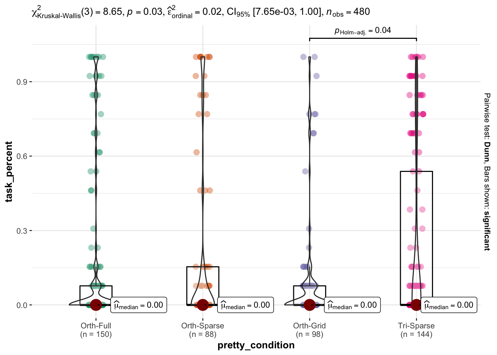
MIXED LOGISTIC REGRESSION
Fit a mixed logistic regression (at the item level), predicting accuracy (absolute score) on all discriminating questions by condition; accounting for random effects of subject and item.
Fit Model
TODO model with item as random doesn’t converge unless use bobyqa optimizer. ::: {.cell}
#confirm all factors is.factor(df_i$q) &&is.factor(df_i$subject) &&is.factor(df_i$pretty_condition) &&is.factor(df_i$accuracy)
[1] TRUE
CODE
## 1 | SETUP RANDOM INTERCEPT SUBJECT#:: EMPTY MODEL (baseline, no random effect)print("Empty fixed model")
[1] "Empty fixed model"
CODE
m0 =glm(accuracy ~1, family ="binomial", data = df_i) # summary(m0)#:: RANDOM INTERCEPT SUBJECTprint("Subject intercept random model")
[1] "Subject intercept random model"
CODE
mm.rS <-glmer(accuracy ~ (1|subject), data = df_i, family ="binomial")# summary(mm.rS)# :: TEST random effectpaste("AIC decreases w/ new model?", m0$aic >AIC(logLik(mm.rS)))
[1] "AIC decreases w/ new model? TRUE"
CODE
test_lrt(m0,mm.rS) #same as anova(m0, m1, test = "Chi")
# Likelihood-Ratio-Test (LRT) for Model Comparison (ML-estimator)
Name | Model | df | df_diff | Chi2 | p
--------------------------------------------------
m0 | glm | 1 | | |
mm.rS | glmerMod | 2 | 1 | 3019.81 | < .001
CODE
paste("Likelihood Ratio test is significant? p = ",(test_lrt(m0,mm.rS))$p[2])
[1] "Likelihood Ratio test is significant? p = 0"
CODE
#:: RANDOM INTERCEPT SUBJECT + ITEMprint("Subject Intercept + Item intercept random model")
[1] "Subject Intercept + Item intercept random model"
CODE
mm.rSQ <-glmer(accuracy ~ (1|subject) + (1|q), data = df_i, family ="binomial",control =glmerControl(optimizer="bobyqa", optCtrl=list(maxfun=2e5)))#summary(mm.rSQ)# :: TEST random effectpaste("AIC decreases w/ new model?", AIC(logLik(mm.rS)) >AIC(logLik(mm.rSQ)))
[1] "AIC decreases w/ new model? TRUE"
CODE
test_lrt(mm.rS, mm.rSQ) #same as anova(m0, m1, test = "Chi")
Some of the nested models seem to be identical and probably only vary in
their random effects.
# Likelihood-Ratio-Test (LRT) for Model Comparison (ML-estimator)
Name | Model | df | df_diff | Chi2 | p
--------------------------------------------------
mm.rS | glmerMod | 2 | | |
mm.rSQ | glmerMod | 3 | 1 | 282.10 | < .001
CODE
paste("Likelihood Ratio test is significant? p = ",(test_lrt(mm.rS, mm.rSQ))$p[2])
Some of the nested models seem to be identical and probably only vary in
their random effects.
[1] "Likelihood Ratio test is significant? p = 2.61584550644328e-63"
test_lrt(mm.rSQ,mm.CrSQ) #same as anova(m0, m1, test = "Chi")
# Likelihood-Ratio-Test (LRT) for Model Comparison (ML-estimator)
Name | Model | df | df_diff | Chi2 | p
------------------------------------------------
mm.rSQ | glmerMod | 3 | | |
mm.CrSQ | glmerMod | 6 | 3 | 2.55 | 0.466
CODE
paste("Likelihood Ratio test is significant? p = ",(test_lrt(mm.rSQ,mm.CrSQ))$p[2])
[1] "Likelihood Ratio test is significant? p = 0.466121170373078"
:::
Describe
CODE
# best modelm <- mm.CrSQ#::::::::: PRINT MODEL print("PREDICTOR MODEL")
[1] "PREDICTOR MODEL"
CODE
summary(m)
Generalized linear mixed model fit by maximum likelihood (Laplace
Approximation) [glmerMod]
Family: binomial ( logit )
Formula: accuracy ~ pretty_condition + (1 | subject) + (1 | q)
Data: df_i
Control: glmerControl(optimizer = "bobyqa", optCtrl = list(maxfun = 200000))
AIC BIC logLik deviance df.resid
2662 2702 -1325 2650 6234
Scaled residuals:
Min 1Q Median 3Q Max
-10.213 -0.032 -0.010 -0.004 8.369
Random effects:
Groups Name Variance Std.Dev.
subject (Intercept) 88.403 9.402
q (Intercept) 0.658 0.811
Number of obs: 6240, groups: subject, 480; q, 13
Fixed effects:
Estimate Std. Error z value Pr(>|z|)
(Intercept) -10.212 0.671 -15.22 <2e-16 ***
pretty_conditionOrth-Sparse 0.440 0.814 0.54 0.59
pretty_conditionTri-Sparse 0.914 0.749 1.22 0.22
pretty_conditionOrth-Grid -0.311 0.780 -0.40 0.69
---
Signif. codes: 0 '***' 0.001 '**' 0.01 '*' 0.05 '.' 0.1 ' ' 1
Correlation of Fixed Effects:
(Intr) pr_O-S pr_T-S
prtty_cnO-S -0.400
prtty_cnT-S -0.375 0.391
prtty_cnO-G -0.466 0.367 0.395
CODE
print("SIGNIFICANCE TEST [non directional]")
[1] "SIGNIFICANCE TEST [non directional]"
CODE
car::Anova(m, type =2)
Analysis of Deviance Table (Type II Wald chisquare tests)
Response: accuracy
Chisq Df Pr(>Chisq)
pretty_condition 2.51 3 0.47
CODE
#:::::::: MANUAL ONE-SIDED SIGTEST #note: anova and chi square are always one-tailed, but that is independent of being one-sided#https://www.ibm.com/support/pages/can-one-get-one-tailed-tests-logistic-regression-dividing-significance-levels-half# one-sided (right tail) z test for B COEFFICIENT#SANITY CHECK 2-tailed test should match the model output# tt <- 2*pnorm(summary(m)$coefficients[2,3], lower.tail = F)# paste("p value for two-tailed test, null B = 0 : ",round(tt,5))# ot <- pnorm(summary(m)$coefficients[2,3], lower.tail = F)# paste("BUT we want a one directional, null: B <= 0: ",round(ot,5))#TODO POSTHOCS#:::::::: INTERPRET COEFFICIENTS# se <- sqrt(diag(stats::vcov(m)))# table of estimates with 95% CI# paste("LOG ODDS")# (tab <- cbind(Est = fixef(m), # LL = fixef(m) - 1.96 * se, # UL = fixef(m) + 1.96 * se))# paste("ODDS RATIOS")# (e <- exp(tab))
TODO Inference
TODO REDO UPDATE THIS
We fit a mixed-effect binomial logistic regression model with random intercepts for subjects and items; to investigate the effect of condition on test phase item accuracy. The model including a fixed effect of condition performed significantly better than an intercept-only baseline model (χ2(4): 11.02, p < 0.001); and the total explanatory power is substantial (conditional R2 = 0.82) and the part related to the fixed effects (marginal R2) is 0.02. Consistent with the pattern of results for the first question only, across all test-phase items, being in the impasse condition increases the odds of a correct response by a factor of 2.8 over the control condition \(e^{\beta_1}\) = 2.80, 95% CI [1.54, 5.09], p < 0.001.
Visualize
CODE
## | PLOT PARAMETERS #SJPLOT | MODEL | ODDS RATIOplot_model(m, vline.color ="red", show.intercept =TRUE, show.values =TRUE,p.threshold =0.1, #manually adjust to account for directional testci.lvl =0.95 ) +#manually adjusted for directional test labs(title ="Model Estimate | Odds Ratio",subtitle ="",x ="Condition") #why no error bars? problem with model?
## | PLOT PREDICTIONS#SJPLOT | MODEL | PROBABILITIESplot_model(m, type="eff",show.intercept =TRUE,show.values =TRUE,title ="Model Prediction | Probability of Accurate Response",axis.title =c("Condition","Probability of Accurate Response"))
$pretty_condition
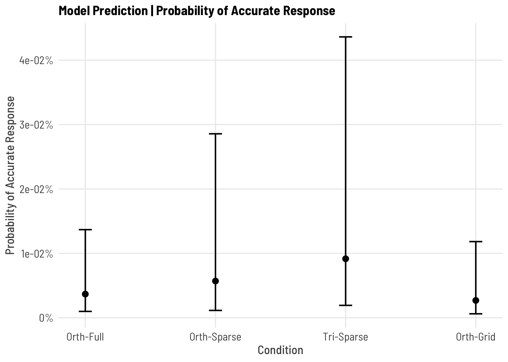
CODE
#PLOT MODEL PREDICTIONplot_model(m, type ="pred")[[1]] +ylim(0,1)
Scale for 'y' is already present. Adding another scale for 'y', which will
replace the existing scale.
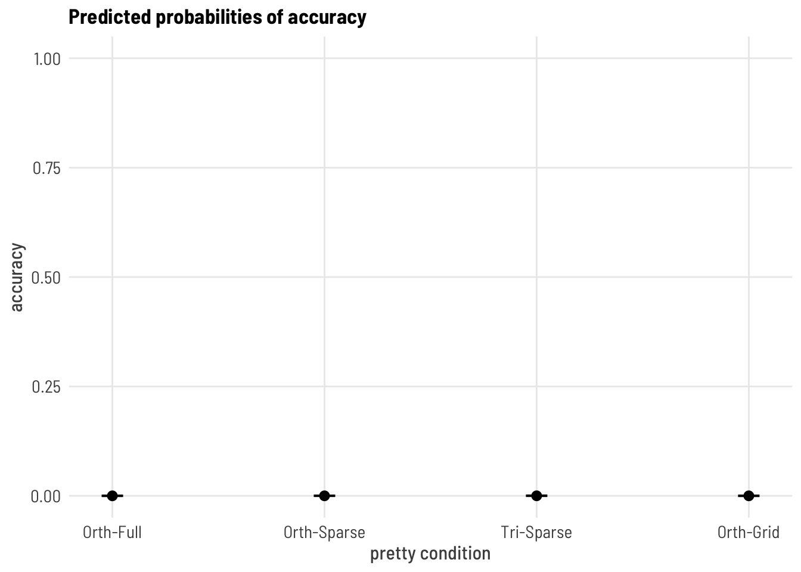
CODE
# labs(# title = "Model Prediction | Probability of Accurate Response",# subtitle = "Impasse increases Probability of Correct Response"# )
Diagnostics
CODE
print("SANITY CHECK REPORTING")
[1] "SANITY CHECK REPORTING"
CODE
# report(m)print("DIAGNOSTICS")
[1] "DIAGNOSTICS"
CODE
check_model(m)
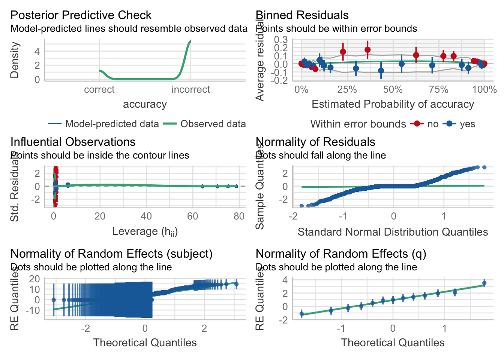
TODO
Model with random intercept of Question doesn’t want to converge unless I use the optimizer, which also throws warnings. Maybe jsut use random subject? (hint… yes…) Otherwise, try the bayesian version ##### BAYESIAN For some reason there are convergence difficulties. Try again with the brms version
Family: binomial
Links: mu = logit
Formula: as.integer(accuracy) ~ pretty_condition + (1 | subject) + (1 | q)
Data: df_i (Number of observations: 6240)
Draws: 4 chains, each with iter = 2000; warmup = 1000; thin = 1;
total post-warmup draws = 4000
Group-Level Effects:
~q (Number of levels: 13)
Estimate Est.Error l-95% CI u-95% CI Rhat Bulk_ESS Tail_ESS
sd(Intercept) 0.11 0.04 0.05 0.19 1.00 1659 1997
~subject (Number of levels: 480)
Estimate Est.Error l-95% CI u-95% CI Rhat Bulk_ESS Tail_ESS
sd(Intercept) 0.70 0.04 0.63 0.77 1.00 1561 2218
Population-Level Effects:
Estimate Est.Error l-95% CI u-95% CI Rhat Bulk_ESS
Intercept 0.40 0.07 0.26 0.54 1.00 1192
pretty_conditionOrthMSparse 0.09 0.10 -0.11 0.29 1.00 1097
pretty_conditionTriMSparse 0.18 0.09 0.00 0.37 1.00 1070
pretty_conditionOrthMGrid -0.17 0.10 -0.36 0.02 1.00 1246
Tail_ESS
Intercept 1824
pretty_conditionOrthMSparse 2165
pretty_conditionTriMSparse 1844
pretty_conditionOrthMGrid 1992
Draws were sampled using sample(hmc). For each parameter, Bulk_ESS
and Tail_ESS are effective sample size measures, and Rhat is the potential
scale reduction factor on split chains (at convergence, Rhat = 1).
CODE
plot_model(B.mm.acc.CrSQ, show.values =TRUE)
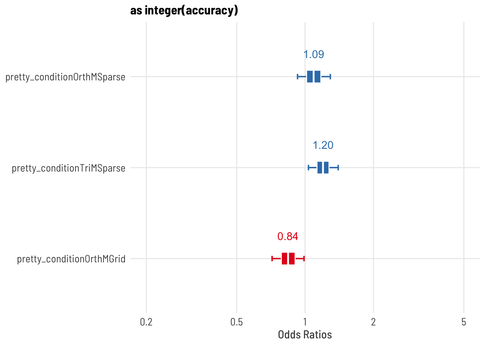
CODE
plot(pd(B.mm.acc.CrSQ))
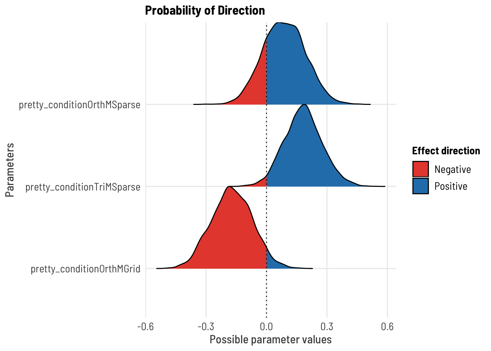
CODE
# plot(equivalence_test(B.mm.acc.CrSQ))plot_model(B.mm.acc.CrSQ, type ="pred")
Using the maximum response value as the number of trials.
Warning: Using 'binomial' families without specifying 'trials' on the left-hand
side of the model formula is deprecated.
Warning in max(out$Y, na.rm = TRUE): no non-missing arguments to max; returning
-Inf
Note: uncertainty of error terms are not taken into account. You may want to use `rstantools::posterior_predict()`.
$pretty_condition
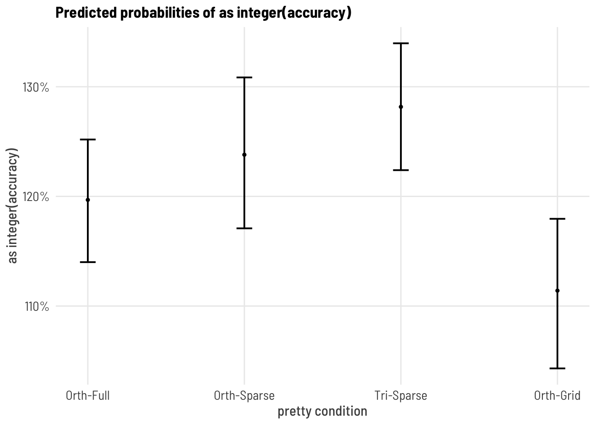
H1A | OVERALL INTERPRETATION STATE
“orthogonal” [reference category] includes orthogonal and satisficing responses ==> indicates a primarily orthogonal state of coordinate system understanding
“other” includes: blank, reference point, responses that can’t be classified (including selecting all datapoints), => indicates an uncertain or unidentifiable state of coordinate system understanding, but one that is distinctly not orthogonal nor triangular
“angular” includes ‘lines connecting’ responses as well as responses that include both orthogonal and triangular answers => indicates some degree of angular/triangular coordinate understanding
“triangular” includes correct triangular and ‘lines connecting’ responses as well as responses that include both orthogonal and triangular answers => indicates some degree of angular/triangular coordinate understanding
Research Question
Does Ss in the impasse condition produce less orthogonal responses across questions?
Hypothesis
H1A | Ss in the IMPASSE condition will have a higher likelihood of producing unknown and triangle-like response states across all items
Data
data: df_items where q nin 6,9 (13 discriminant test phase items)
outcome: state ( 3 level factor from high_interpretation )
predictor: condition [between-subjects factor]
Analysis Strategy
MIXED Multinomial (Logistic) Regression on state predicted by condition
Alternative:
MIXED Ordinal regression on state (doesn’t meet proportional odds assumption-I think)
MIXED Multinomial or Ordinal regression on high_interpretation (some cells are 0, produces problems)
#::::::::::::DESCRIPTIVEStable(df_i$state, df_i$pretty_condition) %>%addmargins(2) %>%#display sum for rowprop.table(margin=2) %>%#return proportion (of column)addmargins(1) #sanity check sum of columns
## | PLOT PREDICTIONS#SJPLOT | MODEL | PROBABILITIES# plot_model(m, type="eff",# show.intercept = TRUE,# show.values = TRUE,# title = "Model Prediction | Probability of Accurate Response",# axis.title = c("Condition","Probability of Accurate Response"))# # #PLOT MODEL PREDICTIONplot_model(m, type ="pred")
Note: uncertainty of error terms are not taken into account. You may want to use `rstantools::posterior_predict()`.
The graph comprehension task includes 15 questions completed in sequence. But the first question the reader encounters (Q1) is the most important, as it is their first exposure to the unconventional triangular coordinate system.
Research Question
Does the frequency of correct (vs) incorrect responses on the first question differ by condition? [Is response accuracy independent of condition?]
Hypothesis
H1A | Ss in the TRI condition will have a higher likelihood of correctly responding to the first question than those in the CONTROL condition
Data
data: df_items where q == 1
outcome: accuracy ( factor(incorrect/correct) from score_niceABS [absolute score]
predictor: condition [between-subjects factor]
Analysis Strategy
Logistic Regression on accuracy predicted by condition
account for difference in odds of correct score by condition
Alternatives:
Chi-Square test of independence on outcome accuracy by condition
Notes
CHIQ SQR is simplest method to examine independence of two categorical factors; LOGISTIC REGRESSION is recommended for binomial ~ continuous; though with regression we can quantify the size of the effect and overall model fit
independence assumption : (CHI SQR) as we only consider responses on the first question, each observation corresponds to an individual subject, and are thus independent
cell frequency : (CHI SQR) expected frequency in each cell of the contingency table is greater than 5 (more than 5 correct , more than 5 incorrect responses)
#:::::::: BARSTATSggbarstats( data = df, y = pretty_condition, x = accuracy)
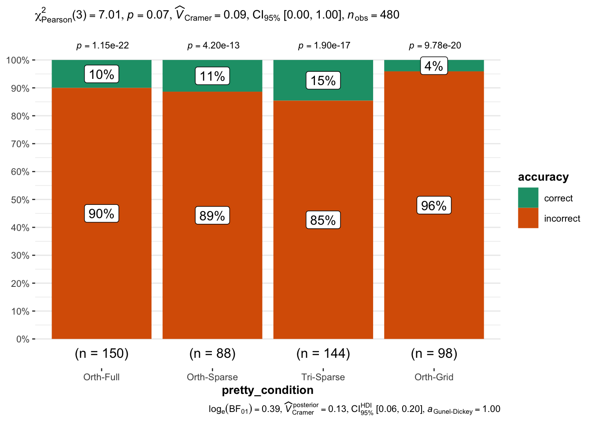
CODE
#::::::::::::DESCRIPTIVESpaste("Proportions of Correct Responses by Condition")
[1] "Proportions of Correct Responses by Condition"
CODE
table(df$accuracy, df$pretty_condition) %>%addmargins(2) %>%#display sum for rowprop.table(margin=2) %>%#return proportion (of column)addmargins(1) #sanity check sum of columns
#: 3 TEST SUPERIOR FITpaste("AIC wth predictor is lower than empty model?", m0$aic > m1$aic)
[1] "AIC wth predictor is lower than empty model? TRUE"
CODE
test_lrt(m0,m1) #same as anova(m0, m1, test = "Chi")
# Likelihood-Ratio-Test (LRT) for Model Comparison (ML-estimator)
Name | Model | df | df_diff | Chi2 | p
------------------------------------------
m0 | glm | 1 | | |
m1 | glm | 4 | 3 | 7.88 | 0.049
CODE
paste("Likelihood Ratio test is significant? p = ",(test_lrt(m0,m1))$p[2])
[1] "Likelihood Ratio test is significant? p = 0.0486364443240912"
The Condition predictor decreases AIC, but the Likelihood Ratio Test is marginal. We proceed to examine the predictor model, as we plan to do a 1-tailed NHST .
Describe
CODE
# DESCRIBE MODEL ::::::::::::::::::::::::::::::::::::: print("PREDICTOR MODEL [default two-tailed sig test]")
[1] "PREDICTOR MODEL [default two-tailed sig test]"
CODE
summary(m1)
Call:
glm(formula = accuracy ~ pretty_condition, family = "binomial",
data = df)
Deviance Residuals:
Min 1Q Median 3Q Max
-0.561 -0.561 -0.459 -0.289 2.529
Coefficients:
Estimate Std. Error z value Pr(>|z|)
(Intercept) -2.197 0.272 -8.07 6.9e-16 ***
pretty_conditionOrth-Sparse 0.143 0.432 0.33 0.741
pretty_conditionTri-Sparse 0.430 0.360 1.19 0.233
pretty_conditionOrth-Grid -0.960 0.578 -1.66 0.097 .
---
Signif. codes: 0 '***' 0.001 '**' 0.01 '*' 0.05 '.' 0.1 ' ' 1
(Dispersion parameter for binomial family taken to be 1)
Null deviance: 320.78 on 479 degrees of freedom
Residual deviance: 312.90 on 476 degrees of freedom
AIC: 320.9
Number of Fisher Scoring iterations: 5
# MANUAL ONE-SIDED SIGTEST ::::::::::::::::::::::::::: # one-sided (right tail) z test for B COEFFICIENT#https://stats.stackexchange.com/questions/330655/strategy-for-a-one-sided-test-of-glms-coefficients#SANITY CHECK 2-tailed test should match the model outputtt <-2*pnorm(summary(m1)$coefficients[2,3], lower.tail = F)paste("p value for two-tailed test, null B = 0 : ",round(tt,3))
[1] "p value for two-tailed test, null B = 0 : 0.741"
CODE
ot <-pnorm(summary(m1)$coefficients[2,3], lower.tail = F)paste("BUT we want a one tailed directional, null: B <= 0: ",round(ot,3))
[1] "BUT we want a one tailed directional, null: B <= 0: 0.37"
CODE
paste("adjusted confint for directional hypothesis")
[1] "adjusted confint for directional hypothesis"
CODE
(dcint <-confint(m1, level =0.90)) # get 90% for right side))
# Retrieve predictions as probabilities # (for each level of the predictor)# pred.control <- predict(m1,data.frame(pretty_condition="control"),type="response")# #this should match : plogis(intercept coefficient)# paste("Probability of success in control,", pred.control)# pred.impasse <- predict(m1,data.frame(pretty_condition="impasse"),type="response")# #this should match : plogis(intercept coefficient + predictor coeff)# paste("Probability of success in impasse,", pred.impasse)
TODO Inference
Visualize
CODE
#SET MODELm <- m1#SJPLOT | MODEL | ODDS RATIO#library(sjPlot)plot_model(m, type ="est",vline.color ="red", show.intercept =TRUE, show.values =TRUE,p.threshold =0.1, #manually adjust to account for directional testci.lvl =0.90 ) +#manually adjusted for directional test scale_y_continuous() +#remove to put on log scale x axis # scale_x_discrete(labels=c("control","impasse"))+labs(title ="MODEL ESTIMATE | Q1 Accuracy ~ condition",subtitle ="Impasse increases odds of correct response on Q1",x ="Condition") +theme_clean()
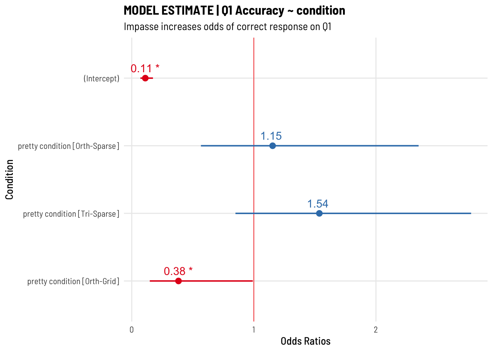
CODE
#SJPLOT | MODEL | PROBABILITIESplot_model(m, type="pred")[[1]] +ylim(0,1) +#scale y axis to actual rangelabs(title ="MODEL PREDICTION | Q1 Accuracy ~ condition",subtitle ="Impasse increases probability of correct response on Q1",x ="Condition") +theme_clean()
While absolute accuracy score tells us whether a participant successfully interpreted the coordinate system, it doesn’t allow us to differentiate between different kinds of incorrect interpretations. Here we examine the (categorical) interpretation state type based on the nature of subject’s response, and determine if these interpretations differ by experimental condition. State is a 3-category derived response variable that groups the following interpretations:
“orthogonal” [reference category] includes orthogonal and satisficing responses ==> indicates a primarily orthogonal state of coordinate system understanding
“other” includes: blank, reference point, responses that can’t be classified (including selecting all datapoints), => indicates an uncertain or unidentifiable state of coordinate system understanding, but one that is distinctly not orthogonal nor triangular
“angular” includes ‘lines connecting’ responses as well as responses that include both orthogonal and triangular answers => indicates some degree of angular/triangular coordinate understanding
“triangular” includes correct triangular and ‘lines connecting’ responses as well as responses that include both orthogonal and triangular answers => indicates some degree of angular/triangular coordinate understanding
Research Question
Does Ss in the impasse condition produce less orthogonal responses on the first question?
Hypothesis
H1A | Ss in the IMPASSE condition will have a higher likelihood of producing unknown and and triangle-like response states, relative to orthogonal response states, on the first question
Data
data: df_items where q == 1
outcome: state ( 4 level factor from 5 level high_interpretation )
predictor: condition [between-subjects factor]
Analysis Strategy
Multinomial (Logistic) Regression on state predicted by condition
Alternative:
Ordinal regression on state; but model doesn’t satisfy proportional odds assumption (parallel slopes)
Multinomial or Ordinal regression on high_interpretation (5 category interpretation state which distinguishes between uncertain (blank, reference) unclassifiable, triangle-like and true triangular.) There are some cells with zeros, however (no uncertain responses in control) which means the model can’t accurately estimate those comparisons
#:::::::: BARSTATSggbarstats( data = df, y = pretty_condition, x = state)
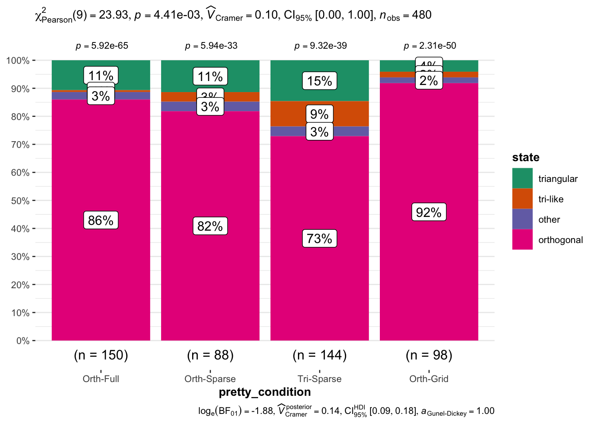
CODE
#::::::::::::DESCRIPTIVEStable(df$state, df$pretty_condition) %>%addmargins(2) %>%#display sum for rowprop.table(margin=2) %>%#return proportion (of column)addmargins(1) #sanity check sum of columns
#check reference level print("Categories (first is reference)")
[1] "Categories (first is reference)"
CODE
levels(df$state)
[1] "orthogonal" "other" "tri-like" "triangular"
CODE
#FIT EMPTY MODEL# print("EMPTY MODEL")catm.0<-multinom(state ~1, data = df)
# weights: 8 (3 variable)
initial value 665.421293
iter 10 value 301.363054
iter 10 value 301.363052
iter 10 value 301.363052
final value 301.363052
converged
CODE
# summary(catm.0)#FIT PREDICTOR MODEL# print("PREDICTOR MODEL")catm <-multinom(formula = state ~ pretty_condition, data = df, model =TRUE)
# weights: 20 (12 variable)
initial value 665.421293
iter 10 value 289.824282
iter 20 value 288.928010
final value 288.928004
converged
CODE
# summary(catm)#COMPARE MODEL FITpaste("AIC wth predictor is lower than empty model?", catm.0$AIC > catm$AIC)
[1] "AIC wth predictor is lower than empty model? TRUE"
CODE
test_lrt(catm.0, catm)
# Likelihood-Ratio-Test (LRT) for Model Comparison (ML-estimator)
Name | Model | df | df_diff | Chi2 | p
------------------------------------------------
catm.0 | multinom | 3 | | |
catm | multinom | 12 | 9 | 24.87 | 0.003
CODE
##compare bayesian version#library(brms)# b.cat <- brm( state2 ~ pretty_condition, data = df, family = "categorical", backend = "cmdstanr")# summary(b.cat)# plot_model(b.cat)# report(b.cat)# coefficient estimates are very simliar to catm. super cool!##compare mclogit version#"baseline-category logit model# https://www.elff.eu/software/mclogit/manual/mblogit/# blm1 <- mblogit(state2 ~ pretty_condition , data = df)# summary(blm1)#identical to catm. super cool!
AIC in predictor model is less than empty model, and likelihood ratio test indicates predictor model is significantly better fit to the sample data than the empty (intercept only) model.
Call:
multinom(formula = state ~ pretty_condition, data = df, model = TRUE)
Coefficients:
(Intercept) pretty_conditionOrth-Sparse pretty_conditionTri-Sparse
other -3.47 0.295 0.429
tri-like -4.86 1.682 2.771
triangular -2.09 0.113 0.478
pretty_conditionOrth-Grid
other -0.333
tri-like 1.053
triangular -1.026
Std. Errors:
(Intercept) pretty_conditionOrth-Sparse pretty_conditionTri-Sparse
other 0.508 0.778 0.684
tri-like 1.004 1.164 1.046
triangular 0.265 0.429 0.357
pretty_conditionOrth-Grid
other 0.877
tri-like 1.232
triangular 0.576
Residual Deviance: 578
AIC: 602
CODE
car::Anova(m)
# weights: 8 (3 variable)
initial value 665.421293
iter 10 value 301.363054
iter 10 value 301.363052
iter 10 value 301.363052
final value 301.363052
converged
Analysis of Deviance Table (Type II tests)
Response: state
LR Chisq Df Pr(>Chisq)
pretty_condition 24.9 9 0.0031 **
---
Signif. codes: 0 '***' 0.001 '**' 0.01 '*' 0.05 '.' 0.1 ' ' 1
CODE
# calculate z-statistics of coefficientsz_stats <-summary(m)$coefficients/summary(m)$standard.errors# convert to p-valuesp_values <- (1-pnorm(abs(z_stats)))*2# display p-values in transposed data frame(p_values <-data.frame(p = (p_values)))
#:::::::: PLOT#SJPLOT | MODEL | ODDS RATIO#library(sjPlot)plot_model(m, type ="est",vline.color ="red", show.intercept =TRUE, show.values =TRUE,p.threshold =0.1, #manually adjust to account for directional testci.lvl =0.90 ) +#manually adjusted for directional test # scale_y_continuous() + #remove to put on log scale x axis # scale_x_discrete(labels=c("control","impasse"))+labs(title ="MODEL ESTIMATE | Q1 Accuracy ~ condition",subtitle ="Impasse increases odds of correct response on Q1",x ="Condition") +theme_clean()
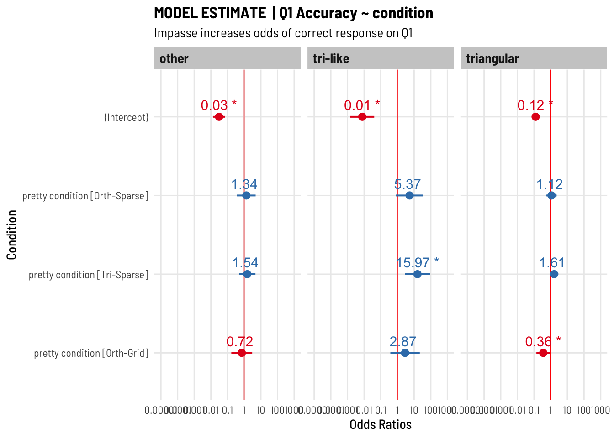
CODE
#SJPLOT | MODEL | PROBABILITIESplot_model(m, type="eff", ci.lvl =0.95)[[1]] +ylim(0,1) +labs(title ="MODEL PREDICTION | Q1 State ~ condition",subtitle ="Impasse increases probability of more accurate response states Q1",x ="Condition") +theme_clean()
Scale for 'y' is already present. Adding another scale for 'y', which will
replace the existing scale.
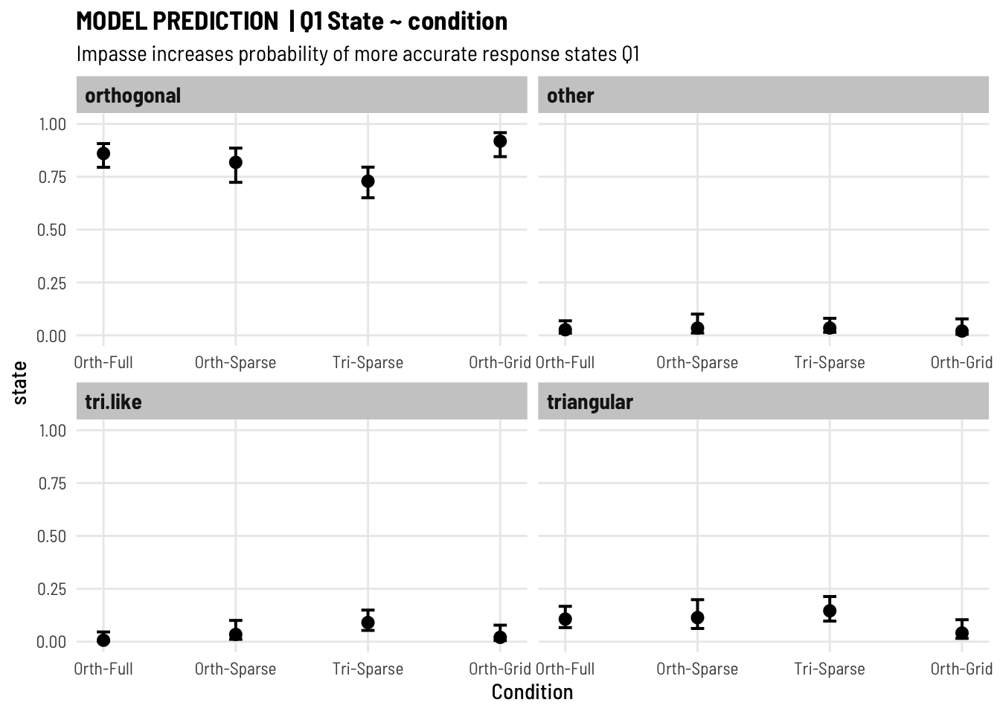
CODE
# #MANUALLY BUILD PREDICTION PLOT FACET BY CONDITION RATHER THAN STATE# p <-plot_model(m, type="eff")[[1]]# d <- ggplot_build(p)[[1]] # points <- d[[2]]# points <- points %>% mutate(# state = recode(PANEL, "1" ="orth", "2"="other", "3" = "trilike", "4"="tri"),# condition = recode(x, "1"="control","2"="impasse"),# prob = y# )# gf_point( prob ~ state, group = ~x, data = points) + # geom_errorbar(aes( x = state, ymin = ymin, ymax = ymax)) + facet_grid(~condition) +ylim(0,1)
#EXAMINE PREDICTIONS#create sample data frame# test <- data.frame(pretty_condition = c("control", "impasse"))# pred <- predict(catm, newdata = test, "probs")# paste("Predicted Probability of Being in Each State")# ( x <- cbind(test, pred))print("MODEL PERFORMANCE")
[1] "MODEL PERFORMANCE"
CODE
performance(catm)
Can't calculate log-loss.
Can't calculate proper scoring rules for ordinal, multinomial or cumulative link models.
# Indices of model performance
AIC | BIC | R2 | R2 (adj.) | RMSE | Sigma
-----------------------------------------------------
601.856 | 651.941 | 0.041 | 0.038 | 0.273 | 1.111
CODE
DescTools::PseudoR2(catm, which =c("McFadden", "CoxSnell", "Nagelkerke"))
McFadden CoxSnell Nagelkerke
0.0413 0.0505 0.0706
CODE
#General Goodness of Fit#library(generalhoslem)#logitgof(df$state, catm$fitted.values, g = 3)#A non-significant p value indicates that there is no evidence that the observed and expected frequencies differ (i.e., evidence of good fit).#don't fret! this version of the hoslem-lem test is problematic with fewer than 10 input variables# chisq.test(df$state, predict(catm)) #actual states VS predicted states# The chi-square test tests the decrease in unexplained variance from the baseline model to the final model# print("MODEL DIAGNOSTICS")# check_model(m) can't do overall diagnostics, have to do them on individual model equations
Source Code
---subtitle: 'Study SGC4A | Hypothesis Testing'---\newpage# Hypothesis Testing {#sec-SGC4A-hypotesting}**TODO***The purpose of this notebook is test the hypotheses that determined the designs of the SGC4A studies.*```{r}#| label: SETUP#| warning : false#| message : false#UTILITIESlibrary(Hmisc) # %nin% operatorlibrary(broom) #tidy model outputlibrary(mosaic) #favstats# library(modelr)library(distributional)# library(jtools)# library(pwr) #power analysis#VISUALIZATION# library(ggpubr) #arrange plots# library(cowplot) #arrange shift function plotslibrary(ggformula) #easy graphs# # library(vcd) #mosaic plots# # library(vcdExtra) #mosaic plotslibrary(kableExtra) #printing tableslibrary(sjPlot) #visualize model coefficientslibrary(ggdist) #uncertainty vizlibrary(gghalves) # plots. in halflibrary(ggbeeswarm) # violin plot stuffslibrary(statsExpressions)library(ggstatsplot) #plots with statslibrary(modelsummary) #latex tables for models!#MODELLINGlibrary(ARTool) #nonparametric anova# library(rstatix) #helpful testing functions incl wilcoxon, etclibrary(report) #easystats reportinglibrary(see) #easystats visualizationlibrary(performance) #easystats model diagnosticslibrary(parameters) #easystats model summary and vis# library(qqplotr) #confint on qq plot# library(gmodels) #contingency table and CHISQR# library(equatiomatic) #extract model equation# library(pscl) #zeroinfl / hurdle models library(lme4) #mixed effects modelslibrary(lmerTest) #for CIs in glmer# library(ggeffects) #visualization log regr models#MULTINOMIAL library(nnet) #multinomial logistic regression [not mixed] #no p valueslibrary(mclogit) #frequentist mixed multinomial logistic regression [mblogit] #gives p values#BAYESIANlibrary(cmdstanr) #executing stanlibrary(brms) #bayesian mixed multinomials [+ other bayesian reg models]library(bayestestR) library(tidyverse) #ALL THE THINGS#OUTPUT OPTIONSlibrary(dplyr, warn.conflicts =FALSE)options(dplyr.summarise.inform =FALSE)options(ggplot2.summarise.inform =FALSE)options(scipen=1, digits=3)#GRAPH THEMEING# theme_set(theme_minimal()) # Custom ggplot theme to make pretty plots# Get the font at https://fonts.google.com/specimen/Barlow+Semi+Condensedtheme_clean <-function() {theme_minimal(base_family ="Barlow Semi Condensed") +theme(panel.grid.minor =element_blank(),plot.title =element_text(family ="BarlowSemiCondensed-Bold"),axis.title =element_text(family ="BarlowSemiCondensed-Medium"),strip.text =element_text(family ="BarlowSemiCondensed-Bold",size =rel(1), hjust =0),strip.background =element_rect(fill ="grey80", color =NA))}set_theme(base =theme_clean())```**Research Questions****Experimental Hypothesis**\**Null Hypothesis**\```{r}#| label: IMPORT-DATA#| warning : false#| message : false# #HACK WD FOR LOCAL RUNNING?imac ="/Users/amyraefox/Code/SGC-Scaffolding_Graph_Comprehension/SGC-X/ANALYSIS/MAIN"setwd(imac)#IMPORT DATA df_subjects <-read_rds('analysis/SGC4A/data/2-scored-data/sgc4a_scored_participants.rds') %>%mutate(task_percent = DV_percent_NABS ) %>%droplevels()df_items <-read_rds('analysis/SGC4A/data/2-scored-data/sgc4a_scored_items.rds') %>%mutate (q =as.factor(q), subject =as.factor(subject),accuracy =recode_factor(score_niceABS, "0"="incorrect","1"="correct"),# CODES TVERSKY AS TRI-LIKE# state = recode_factor(score_SCALED, #for ordinal# "-1" = "orth-like",# "-0.5" = "unknown",# "0" = "unknown",# "0.5" = "tri-like",# "1" = "tri-like"),# CODES TVERSKY AS OTHERstate =recode_factor(score_SCALED, #for ordinal"-1"="orthogonal","-0.5"="other","0"="other","0.5"="tri-like","1"="triangular"),state =as.ordered(state)) #SEPARATE INTO PARTS 1 AND 2# sgc4a <- df_subjects %>% filter(condition %in% c(111,113)) %>% droplevels()# sgc4b <- df_subjects %>% filter(condition %in% c(111,114,115)) %>% filter(mode=="asynch") %>% droplevels()# # sgc4a_items <- df_items %>% filter( subject %in% sgc4a$subject) %>% droplevels()# sgc4b_items <- df_items %>% filter( subject %in% sgc4b$subject) %>% droplevels()```## ## H1A \| OVERALL TASK ACCURACY#### Setup```{r}#| label: SETUP-ACCdf_i = df_items %>%filter(q %nin%c(6,9)) %>% dplyr::select(pretty_condition, accuracy, subject,q)df_s <- df_subjects %>% dplyr::select(pretty_condition, task_percent)```#### Describe```{r}#| label: DESC-ACC#:::::::: STACKED PROPORTIONAL BAR CHARTdf_i %>%ggplot(data = .,mapping =aes(x = pretty_condition,fill = accuracy)) +geom_bar(position ="fill" ) +#,color = "black") +scale_fill_brewer(palette ="Set1") +# facet_wrap(~pretty_mode) + labs(title ="Overall Accuracy",x ="Condition",fill ="",subtitle="Impasse Condition yields a greater proportion of correct responses")#:::::::: STACKED BAR CHART BY QUESTIONdf_items %>%ggplot(data = .,mapping =aes(x = pretty_condition,fill = accuracy)) +geom_bar(position ="fill" ) +#,color = "black") +scale_fill_brewer(palette ="Set1") +facet_wrap(~q) +labs(title ="Accuracy by Question",x ="Condition",fill ="",subtitle="Q6 and Q9 are non-discriminative")#:::::::: FACETED HISTOGRAMstats = df_s %>%group_by(pretty_condition) %>% dplyr::summarise(mean =mean(task_percent))gf_props(~task_percent,fill =~pretty_condition, data = df_s) %>%# gf_facet_grid(pretty_condition ~ pretty_mode) %>%gf_facet_grid(~pretty_condition) %>%gf_vline(data = stats, xintercept =~mean, color ="red") +labs(x ="% Correct",y ="proportion of subjects",title ="Overall Absolute Score (% Correct)",subtitle ="") +theme(legend.position ="blank")``````{r}#| label: DESC2-ACCtitle ="Descriptive Statistics of Response Accuracy (Total % Correct)"tbl1 <- mosaic::favstats(~task_percent, data = df_s) tbl1 %>%kbl (caption = title) %>%kable_classic()title ="Descriptive Statistics of Response Accuracy (Total % Correct) BY CONDITION"tbl2 <- mosaic::favstats(task_percent ~ pretty_condition, data = df_s) tbl2 %>%kbl (caption = title) %>%kable_classic()```#### TESTS##### Aligned Ranks Transformation<!-- https://rcompanion.org/handbook/F_16.html -->```{r}m.art =art(task_percent ~ pretty_condition, data = df_s)anova(m.art)```##### Kruskal Wallis Test```{r}#| label: TEST-ACC(k <-kruskal.test(df_s$task_percent ~ df_s$pretty_condition))```##### Visualize```{r}#| label: TEST-VIZ-ACC(results <- statsExpressions::oneway_anova(data = df_s, x = pretty_condition, y = task_percent,type ="nonparametric", alternative ="less"))#:::::::: STATSPLOT | VIOLINggbetweenstats(y = task_percent, x = pretty_condition, data = df_s, type ="nonparametric")```#### MIXED LOGISTIC REGRESSION*Fit a mixed logistic regression (at the item level), predicting accuracy (absolute score) on all discriminating questions by condition; accounting for random effects of subject and item.*##### Fit ModelTODO model with item as random doesn't converge unless use bobyqa optimizer. ```{r}#| label: MODEL-FIT-ACC## 0 | SETUP#confirm 13 items [all discriminating items]nrow(df_i) /nrow(df_s) ==13#confirm all factors is.factor(df_i$q) &&is.factor(df_i$subject) &&is.factor(df_i$pretty_condition) &&is.factor(df_i$accuracy)## 1 | SETUP RANDOM INTERCEPT SUBJECT#:: EMPTY MODEL (baseline, no random effect)print("Empty fixed model")m0 =glm(accuracy ~1, family ="binomial", data = df_i) # summary(m0)#:: RANDOM INTERCEPT SUBJECTprint("Subject intercept random model")mm.rS <-glmer(accuracy ~ (1|subject), data = df_i, family ="binomial")# summary(mm.rS)# :: TEST random effectpaste("AIC decreases w/ new model?", m0$aic >AIC(logLik(mm.rS)))test_lrt(m0,mm.rS) #same as anova(m0, m1, test = "Chi")paste("Likelihood Ratio test is significant? p = ",(test_lrt(m0,mm.rS))$p[2])#:: RANDOM INTERCEPT SUBJECT + ITEMprint("Subject Intercept + Item intercept random model")mm.rSQ <-glmer(accuracy ~ (1|subject) + (1|q), data = df_i, family ="binomial",control =glmerControl(optimizer="bobyqa", optCtrl=list(maxfun=2e5)))#summary(mm.rSQ)# :: TEST random effectpaste("AIC decreases w/ new model?", AIC(logLik(mm.rS)) >AIC(logLik(mm.rSQ)))test_lrt(mm.rS, mm.rSQ) #same as anova(m0, m1, test = "Chi")paste("Likelihood Ratio test is significant? p = ",(test_lrt(mm.rS, mm.rSQ))$p[2])## 2 | ADD FIXED EFFECT CONDITIONprint("FIXED Condition + Subject & Item random intercepts")mm.CrSQ <-glmer(accuracy ~ pretty_condition + (1|subject) + (1|q) ,data = df_i, family = binomial,control =glmerControl(optimizer="bobyqa", optCtrl=list(maxfun=2e5)))# summary(mm.CrSQ)paste("AIC decreases w/ new model", AIC(logLik(mm.rSQ)) >AIC(logLik(mm.CrSQ)) )test_lrt(mm.rSQ,mm.CrSQ) #same as anova(m0, m1, test = "Chi")paste("Likelihood Ratio test is significant? p = ",(test_lrt(mm.rSQ,mm.CrSQ))$p[2])```##### Describe```{r}#| label: MODEL-DESC-ACC# best modelm <- mm.CrSQ#::::::::: PRINT MODEL print("PREDICTOR MODEL")summary(m)print("SIGNIFICANCE TEST [non directional]")car::Anova(m, type =2)#:::::::: MANUAL ONE-SIDED SIGTEST #note: anova and chi square are always one-tailed, but that is independent of being one-sided#https://www.ibm.com/support/pages/can-one-get-one-tailed-tests-logistic-regression-dividing-significance-levels-half# one-sided (right tail) z test for B COEFFICIENT#SANITY CHECK 2-tailed test should match the model output# tt <- 2*pnorm(summary(m)$coefficients[2,3], lower.tail = F)# paste("p value for two-tailed test, null B = 0 : ",round(tt,5))# ot <- pnorm(summary(m)$coefficients[2,3], lower.tail = F)# paste("BUT we want a one directional, null: B <= 0: ",round(ot,5))#TODO POSTHOCS#:::::::: INTERPRET COEFFICIENTS# se <- sqrt(diag(stats::vcov(m)))# table of estimates with 95% CI# paste("LOG ODDS")# (tab <- cbind(Est = fixef(m), # LL = fixef(m) - 1.96 * se, # UL = fixef(m) + 1.96 * se))# paste("ODDS RATIOS")# (e <- exp(tab))```##### TODO Inference**TODO REDO UPDATE THIS**We fit a mixed-effect binomial logistic regression model with random intercepts for subjects and items; to investigate the effect of condition on test phase item accuracy. The model including a fixed effect of condition performed significantly better than an intercept-only baseline model (χ2(4): 11.02, p \< 0.001); and the total explanatory power is substantial (conditional R2 = 0.82) and the part related to the fixed effects (marginal R2) is 0.02. Consistent with the pattern of results for the first question only, across all test-phase items, being in the impasse condition increases the odds of a correct response by a factor of 2.8 over the control condition $e^{\beta_1}$ = 2.80, 95% CI \[1.54, 5.09\], p \< 0.001.##### Visualize```{r}#| label: MODEL-VIS-ACC## | PLOT PARAMETERS #SJPLOT | MODEL | ODDS RATIOplot_model(m, vline.color ="red", show.intercept =TRUE, show.values =TRUE,p.threshold =0.1, #manually adjust to account for directional testci.lvl =0.95 ) +#manually adjusted for directional test labs(title ="Model Estimate | Odds Ratio",subtitle ="",x ="Condition") #why no error bars? problem with model?#EASYSTATS | MODEL | ODDS RATIOresult <-model_parameters(m, exponentiate =TRUE, component ="all")plot(result)## | PLOT TESTSresult <-equivalence_test(m, rule ="classic", ci=0.9) #classic[tost], , bayesplot(result)## | PLOT PREDICTIONS#SJPLOT | MODEL | PROBABILITIESplot_model(m, type="eff",show.intercept =TRUE,show.values =TRUE,title ="Model Prediction | Probability of Accurate Response",axis.title =c("Condition","Probability of Accurate Response"))#PLOT MODEL PREDICTIONplot_model(m, type ="pred")[[1]] +ylim(0,1) # labs(# title = "Model Prediction | Probability of Accurate Response",# subtitle = "Impasse increases Probability of Correct Response"# )```##### Diagnostics```{r}print("SANITY CHECK REPORTING")# report(m)print("DIAGNOSTICS")check_model(m)```##### TODOModel with random intercept of Question doesn't want to converge unless I use the optimizer, which also throws warnings. Maybe jsut use random subject?(hint... yes...) Otherwise, try the bayesian version##### BAYESIAN For some reason there are convergence difficulties. Try again with the brms version```{r}#BAYESIAN MIXED VERSIONdf <- df_i %>%mutate(accuracy =as.integer(accuracy))#TODO bernoulli or binomial?B.mm.acc.CrSQ <-brm( accuracy ~ pretty_condition + (1|subject) + (1|q),data = df_i,# family = "binomial",family =bernoulli(link ="logit"),chains =4, iter =2000, warmup =1000,cores =4, seed =1234,backend ="cmdstanr",file ="analysis/SGC4A/models/sgc4a_brms_B.mm.acc.CrSQ.rds")summary(B.mm.acc.CrSQ)plot_model(B.mm.acc.CrSQ, show.values =TRUE)plot(pd(B.mm.acc.CrSQ))# plot(equivalence_test(B.mm.acc.CrSQ))plot_model(B.mm.acc.CrSQ, type ="pred")```## H1A \| OVERALL INTERPRETATION STATE- **"orthogonal"** \[reference category\] includes orthogonal and satisficing responses ==\> indicates a primarily *orthogonal* state of coordinate system understanding- **"other"** includes: blank, reference point, responses that can't be classified (including selecting all datapoints), =\> indicates an uncertain or unidentifiable state of coordinate system understanding, but one that is distinctly *not* orthogonal nor triangular- **"angular"** includes 'lines connecting' responses as well as responses that include both orthogonal *and* triangular answers =\> indicates some degree of angular/triangular coordinate understanding- **"triangular"** includes correct triangular and 'lines connecting' responses as well as responses that include both orthogonal *and* triangular answers =\> indicates some degree of angular/triangular coordinate understanding+-----------------------+-------------------------------------------------------------------------------------------------------------------------------------------------+| Research Question | Does Ss in the impasse condition produce less orthogonal responses across questions? |+=======================+=================================================================================================================================================+| **Hypothesis** | H1A \| Ss in the IMPASSE condition will have a higher likelihood of producing unknown and triangle-like response states across all items |+-----------------------+-------------------------------------------------------------------------------------------------------------------------------------------------+| **Data** | - data: `df_items` where `q nin 6,9` (13 discriminant test phase items) || | - outcome: `state` ( 3 level factor from high_interpretation ) || | - predictor: `condition`\[between-subjects factor\] |+-----------------------+-------------------------------------------------------------------------------------------------------------------------------------------------+| **Analysis Strategy** | 1. MIXED Multinomial (Logistic) Regression on state predicted by condition || | || | Alternative: || | || | - MIXED Ordinal regression on state (doesn't meet proportional odds assumption-I think) || | - MIXED Multinomial or Ordinal regression on high_interpretation (some cells are 0, produces problems) |+-----------------------+-------------------------------------------------------------------------------------------------------------------------------------------------+#### Setup```{r}#| label: SETUP-STATE#:::::::: PREP DATAdf_i = df_items %>%filter(q %nin%c(6,9)) %>% dplyr::select(q,subject,state,pretty_condition)``````{r}#:::::::: STACKED BAR CHARTdf_i %>%ggplot(data = .,mapping =aes(x = pretty_condition,fill = state)) +geom_bar(position ="fill" ) +#,color = "black") +scale_fill_brewer(palette ="Set1") +# facet_wrap(~pretty_mode) + labs(title ="Interpretation across all Questions",x ="Condition",fill ="",subtitle="")#:::::::: STACKED BAR CHARTdf_i %>%ggplot(data = .,mapping =aes(x = pretty_condition,fill = state)) +geom_bar(position ="fill" ) +#,color = "black") +scale_fill_brewer(palette ="Set1") +facet_wrap(~q) +labs(title ="Interpretation by Question",x ="Condition",fill ="",subtitle="")``````{r}#::::::::::::DESCRIPTIVEStable(df_i$state, df_i$pretty_condition) %>%addmargins(2) %>%#display sum for rowprop.table(margin=2) %>%#return proportion (of column)addmargins(1) #sanity check sum of columns(t <-table(df_i$state, df_i$pretty_condition) %>%addmargins(2) %>%#display sum for rowaddmargins(1)) #sanity check sum of columns```#### MIXED MULTINOMIAL REGRESSION*Does condition affect the response state of of items across the task?*##### TODO Fit Model \[mblogit\]```{r}#| label: FIT-MBLOGIT-STATE# TRY AGAIN... MAYBE HUNG? # #https://www.elff.eu/software/mclogit/manual/mblogit/# #"baseline category logit" model matches multinom()# # #check reference level # print("Categories (first is reference)")# levels(df_i$state)# # #FIT EMPTY MODEL# # print("EMPTY MODEL")# m.mbl0 <- mblogit(state ~ pretty_condition , #no random intercepts; fixed only model # data = df_i)# #summary(m.mbl0)# # #FIT PREDICTOR MODEL# # print("PREDICTOR MODEL")# m.mbl1 <- mblogit(state ~ pretty_condition , # random = list( ~ 1|subject, ~1|q), # data = df_i)# # summary(m.mbl1)# # #COMPARE MODEL FIT# paste("AIC wth predictor is lower than empty model?", AIC(m.mbl0) > AIC(m.mbl1))# test_lrt(m.mbl0, m.mbl1)# # #DESCRIBE MODEL# summary(m.mbl1)# # #INTERPRET COEFFICIENTS# cint <- confint(m.mbl1, level = 0.95)# print("ODDS RATIO")# (e <- cbind( exp(coef(m.mbl1)), exp(cint))) #exponentiated, adjusted# # #PERFORMANCE# performance(m.mbl1)# # #TABLE# tab_model(m.mbl1, transform = "exp", title = "Model Predicted Odds Ratio")```##### TODO Inference##### Fit Model \[brms\]```{r}#| label: FIT-BRMS-STATE# #HACK WD FOR LOCAL RUNNING?imac ="/Users/amyraefox/Code/SGC-Scaffolding_Graph_Comprehension/SGC-X/ANALYSIS/MAIN"setwd(imac)#BAYESIAN MIXED VERSIONmm.cat.CrSQ <-brm( state ~ pretty_condition + (1|subject) + (1|q), data = df_i, family ="categorical",chains =4, iter =2000, warmup =1000,cores =4, seed =1234,backend ="cmdstanr",file ="analysis/SGC4A/models/sgc4a_brms_mixedcat_state.rds")``````{r}#| label: VIS-BRMS-STATE#set model m <- mm.cat.CrSQsummary(m)## | PLOT PARAMETERS #SJPLOT | MODEL | ODDS RATIO# plot_model(m, vline.color = "red", # show.intercept = TRUE, # show.values = TRUE,# p.threshold = 0.1, #manually adjust to account for directional test# ci.lvl = 0.90 ) + #manually adjusted for directional test # labs(title = "Model Estimate | Odds Ratio",# subtitle = "",# x = "Condition")#EASYSTATS | MODEL | ODDS RATIOresult <-model_parameters(m, exponentiate =TRUE, component ="all")plot(result)# result <- simulate_parameters(m)# plot(result, stack = FALSE)#check posteriorpp_check(m, ndraws=1000)## | PLOT TESTSresult <-equivalence_test(m, rule ="classic", ci=0.9) #classic[tost], , bayesplot(result)result <-rope(m)plot(result)result <-pd(m)plot(result)## | PLOT PREDICTIONS#SJPLOT | MODEL | PROBABILITIES# plot_model(m, type="eff",# show.intercept = TRUE,# show.values = TRUE,# title = "Model Prediction | Probability of Accurate Response",# axis.title = c("Condition","Probability of Accurate Response"))# # #PLOT MODEL PREDICTIONplot_model(m, type ="pred")#TODO OUTPUT TABLE #https://arelbundock.com/posts/modelsummary_multinomial_logit/# modelsummary(m)```##### TODO Inference##### COMPARE```{r}#| label: COMPARE-STATE-MODELS# compare_models(m.mbl1, mm.cat.CrSQ)```## H1B \| Q1 ACCURACYThe graph comprehension task includes 15 questions completed in sequence. But the first question the reader encounters (Q1) is the most important, as it is their *first exposure* to the unconventional triangular coordinate system.+-----------------------+----------------------------------------------------------------------------------------------------------------------------------------------------------------------------------------------------------------------------------------+| Research Question | Does the frequency of correct (vs) incorrect responses on the first question differ by condition? \[Is response accuracy independent of condition?\] |+=======================+========================================================================================================================================================================================================================================+| **Hypothesis** | H1A \| Ss in the TRI condition will have a higher likelihood of correctly responding to the first question than those in the CONTROL condition |+-----------------------+----------------------------------------------------------------------------------------------------------------------------------------------------------------------------------------------------------------------------------------+| **Data** | - data: `df_items` where `q == 1` || | - outcome: *accuracy* ( factor(incorrect/correct) from `score_niceABS`\[absolute score\] || | - predictor: `condition`\[between-subjects factor\] |+-----------------------+----------------------------------------------------------------------------------------------------------------------------------------------------------------------------------------------------------------------------------------+| **Analysis Strategy** | 1. Logistic Regression on `accuracy` predicted by `condition` || | - account for difference in odds of correct score by condition || | || | Alternatives: || | || | - Chi-Square test of independence on outcome `accuracy` by `condition` |+-----------------------+----------------------------------------------------------------------------------------------------------------------------------------------------------------------------------------------------------------------------------------+| **Notes** | - CHIQ SQR is simplest method to examine independence of two categorical factors; LOGISTIC REGRESSION is recommended for binomial \~ continuous; though with regression we can quantify the size of the effect and overall model fit || | - independence assumption : (CHI SQR) as we only consider responses on the first question, each observation corresponds to an individual subject, and are thus independent || | - cell frequency : (CHI SQR) expected frequency in each cell of the contingency table is greater than 5 (more than 5 correct , more than 5 incorrect responses) |+-----------------------+----------------------------------------------------------------------------------------------------------------------------------------------------------------------------------------------------------------------------------------+#### Setup```{r}#| label: SETUP-Q1ACC#:::::::: PREP DATAdf <- df_items %>%filter(q==1) %>% dplyr::select(accuracy, pretty_condition)```#### Describe ```{r}#| label: VIS-Q1ACC#:::::::: STACKED BAR CHARTdf %>%ggplot(data = .,mapping =aes(x = pretty_condition,fill = accuracy)) +geom_bar(position ="fill" ) +#,color = "black") +scale_fill_brewer(palette ="Set1") +# facet_wrap(~pretty_mode) + labs(#y = "Correct Response on Q 1",title ="Q1 Accuracy",x ="Condition",fill ="",subtitle="")#:::::::: BARSTATSggbarstats( data = df, y = pretty_condition, x = accuracy)``````{r}#| label: DESC-Q1ACC#::::::::::::DESCRIPTIVESpaste("Proportions of Correct Responses by Condition")table(df$accuracy, df$pretty_condition) %>%addmargins(2) %>%#display sum for rowprop.table(margin=2) %>%#return proportion (of column)addmargins(1) #sanity check sum of columnspaste("Number of Correct Responses by Condition")table(df$accuracy, df$pretty_condition) %>%addmargins(2) %>%#display sum for rowaddmargins(1) #sanity check sum of columns```#### LOGISTIC REGRESSIONFit a logistic regression predicting accuracy (absolute score) (n = `r nrow(df)`) by condition (k = 2).\- Parameter estimate: $\beta_{0}$ = Log Odds of (correct) responses in CONTROL condition- $e^{\beta_{0}}$ = ODDS of correct response in CONTROL condition- Parameter estimate: $\beta_{1}$ = $\beta_{1impasse}$ Log Odds (Log OR; change in odds for correct response in impasse (vs) control \[log scale\])- $e^{\beta_{1}}$ = ODDS RATIO of correct response in IMPASSE (vs) CONTROL- **Null hypothesis**:$\beta_{impasse} \le 0$ the odds for a correct response does not change, or decreases- **Alternative hypothesis:** $\beta_{impasse} \gt 0$ the odds of a correct response increases##### Fit Model*First, we fit a logistic regression with condition as predictor, and compare its fit to an empty (intercept-only) model.*```{r}#| label: MODEL-FIT-Q1ACC#| warning: false#| message: false# MODEL FITTING ::::::::#: 1 EMPTY MODEL baseline glm model intercept onlym0 =glm(accuracy ~1, data = df, family ="binomial")# print("EMPTY MODEL")# summary(m0)#: 2 CONDITION modelm1 <-glm( accuracy ~ pretty_condition, data = df, family ="binomial")# print("PREDICTOR MODEL")summary(m1)car::Anova(m1)#: 3 TEST SUPERIOR FITpaste("AIC wth predictor is lower than empty model?", m0$aic > m1$aic)test_lrt(m0,m1) #same as anova(m0, m1, test = "Chi")paste("Likelihood Ratio test is significant? p = ",(test_lrt(m0,m1))$p[2])```*The Condition predictor decreases AIC, but the Likelihood Ratio Test is marginal. We proceed to examine the predictor model, as we plan to do a 1-tailed NHST .*##### Describe```{r}#| label: MODEL-DESC-Q1ACC# DESCRIBE MODEL ::::::::::::::::::::::::::::::::::::: print("PREDICTOR MODEL [default two-tailed sig test]")summary(m1)car::Anova(m1)# MANUAL ONE-SIDED SIGTEST ::::::::::::::::::::::::::: # one-sided (right tail) z test for B COEFFICIENT#https://stats.stackexchange.com/questions/330655/strategy-for-a-one-sided-test-of-glms-coefficients#SANITY CHECK 2-tailed test should match the model outputtt <-2*pnorm(summary(m1)$coefficients[2,3], lower.tail = F)paste("p value for two-tailed test, null B = 0 : ",round(tt,3))ot <-pnorm(summary(m1)$coefficients[2,3], lower.tail = F)paste("BUT we want a one tailed directional, null: B <= 0: ",round(ot,3))paste("adjusted confint for directional hypothesis")(dcint <-confint(m1, level =0.90)) # get 90% for right side))# https://stats.stackexchange.com/questions/20734/is-a-1-sided-90-prediction-interval-equivalent-to-a-2-sided-95-prediction-inte#:::::::: INTERPRET COEFFICIENTS# print("Confidence Interval —- LOG ODDS")# confint(m1) #not adjusted for 1-tailedprint("Coefficients —- ODDS RATIOS")# (e <- cbind( exp(coef(m1)), exp(confint(m1)))) #exponentiated, not adjusted(e <-cbind( exp(coef(m1)), exp(dcint))) #exponentiated, adjustedprint("MODEL PREDICTIONS")# Retrieve predictions as probabilities # (for each level of the predictor)# pred.control <- predict(m1,data.frame(pretty_condition="control"),type="response")# #this should match : plogis(intercept coefficient)# paste("Probability of success in control,", pred.control)# pred.impasse <- predict(m1,data.frame(pretty_condition="impasse"),type="response")# #this should match : plogis(intercept coefficient + predictor coeff)# paste("Probability of success in impasse,", pred.impasse)```##### TODO Inference##### Visualize```{r}#| label: MODEL-VIS-Q1ACC#| message: false#| warning : false#SET MODELm <- m1#SJPLOT | MODEL | ODDS RATIO#library(sjPlot)plot_model(m, type ="est",vline.color ="red", show.intercept =TRUE, show.values =TRUE,p.threshold =0.1, #manually adjust to account for directional testci.lvl =0.90 ) +#manually adjusted for directional test scale_y_continuous() +#remove to put on log scale x axis # scale_x_discrete(labels=c("control","impasse"))+labs(title ="MODEL ESTIMATE | Q1 Accuracy ~ condition",subtitle ="Impasse increases odds of correct response on Q1",x ="Condition") +theme_clean()#SJPLOT | MODEL | PROBABILITIESplot_model(m, type="pred")[[1]] +ylim(0,1) +#scale y axis to actual rangelabs(title ="MODEL PREDICTION | Q1 Accuracy ~ condition",subtitle ="Impasse increases probability of correct response on Q1",x ="Condition") +theme_clean()``````{r}#| label: MODEL-TBL-Q1ACC#SJPLOT | MODEL | TABLEtab_model(m)# #MODEL SUMMARY | save latex table# models <- list("odds ratios" = m1, "(log odds)" = m1)# notes = list("* p < 0.05, ** p < 0.01, *** p < 0.001",# '$sigma^{2}$ = 3.29" N(subject) = 126 $\tau_{00}$(subject) = 22.22 N(question) = 13 $\tau_{00}$(question) = 0.31'# )# # modelsummary(models,# exponentiate = c(TRUE, FALSE),# shape = term ~ model + statistic,# fmt = 2, #two digits w/ trailing zero# estimate = "{estimate} {stars}",# statistic = "conf.int",# gof_map = c("AIC", "sigma"),# gof_omit = 'RMSE|ICC|BIC',# coef_rename = c("pretty_conditionimpasse" = "Condition[impasse]"),# title = 'Accuracy ~ Condition (Mixed Logistic Regression)', # notes = notes,# output = "analysis/SGC3A/models/tables/GLMER_OverallAccuracy_lab.tex")# # # coef_omit = "Intercept",```##### Diagnostics```{r}#| label: MODEL-DIAG-Q1ACC#| message: false#| warning: false# print("SANITY CHECK REPORTING")# report::report(m)#print("MODEL PERFORMANCE")# performance(m)print("MODEL DIAGNOSTICS")check_model(m)```## H1B \| Q1 INTERPRETATION STATEWhile absolute accuracy score tells us whether a participant successfully interpreted the coordinate system, it doesn't allow us to differentiate between different kinds of incorrect interpretations. Here we examine the (categorical) interpretation state type based on the nature of subject's response, and determine if these interpretations differ by experimental condition. State is a 3-category derived response variable that groups the following interpretations:- **"orthogonal"** \[reference category\] includes orthogonal and satisficing responses ==\> indicates a primarily *orthogonal* state of coordinate system understanding- **"other"** includes: blank, reference point, responses that can't be classified (including selecting all datapoints), =\> indicates an uncertain or unidentifiable state of coordinate system understanding, but one that is distinctly *not* orthogonal nor triangular- **"angular"** includes 'lines connecting' responses as well as responses that include both orthogonal *and* triangular answers =\> indicates some degree of angular/triangular coordinate understanding- **"triangular"** includes correct triangular and 'lines connecting' responses as well as responses that include both orthogonal *and* triangular answers =\> indicates some degree of angular/triangular coordinate understanding+-----------------------+-----------------------------------------------------------------------------------------------------------------------------------------------------------------------------------------------------------------------------------------------------------------------------------------------------------------------------------------------------------+| Research Question | Does Ss in the impasse condition produce less orthogonal responses on the first question? |+=======================+===========================================================================================================================================================================================================================================================================================================================================================+| **Hypothesis** | H1A \| Ss in the IMPASSE condition will have a higher likelihood of producing unknown and and triangle-like response states, relative to orthogonal response states, on the first question |+-----------------------+-----------------------------------------------------------------------------------------------------------------------------------------------------------------------------------------------------------------------------------------------------------------------------------------------------------------------------------------------------------+| **Data** | - data: `df_items` where `q == 1` || | - outcome: `state` ( 4 level factor from 5 level high_interpretation ) || | - predictor: `condition`\[between-subjects factor\] |+-----------------------+-----------------------------------------------------------------------------------------------------------------------------------------------------------------------------------------------------------------------------------------------------------------------------------------------------------------------------------------------------------+| **Analysis Strategy** | 1. Multinomial (Logistic) Regression on state predicted by condition || | || | Alternative: || | || | - Ordinal regression on state; but model doesn't satisfy proportional odds assumption (parallel slopes) || | - Multinomial or Ordinal regression on high_interpretation (5 category interpretation state which distinguishes between uncertain (blank, reference) unclassifiable, triangle-like and true triangular.) There are some cells with zeros, however (no uncertain responses in control) which means the model can't accurately estimate those comparisons |+-----------------------+-----------------------------------------------------------------------------------------------------------------------------------------------------------------------------------------------------------------------------------------------------------------------------------------------------------------------------------------------------------+#### Setup ```{r}#| label: SETUP-Q1STATE#:::::::: PREP DATAdf <- df_items %>%filter(q==1) %>% dplyr::select(pretty_condition, state)```#### Describe ```{r}#| label: VIS-Q1STATE#:::::::: STACKED BAR CHARTdf %>%ggplot(data = .,mapping =aes(x = pretty_condition,fill = state)) +geom_bar(position ="fill" ) +#,color = "black") +scale_fill_brewer(palette ="Set1") +# facet_wrap(~pretty_mode) + labs(#y = "Correct Response on Q 1",title ="Q1 Interpretation",x ="Condition",fill ="",subtitle="")#:::::::: BARSTATSggbarstats( data = df, y = pretty_condition, x = state)``````{r}#| label: DESC-Q1STATE#::::::::::::DESCRIPTIVEStable(df$state, df$pretty_condition) %>%addmargins(2) %>%#display sum for rowprop.table(margin=2) %>%#return proportion (of column)addmargins(1) #sanity check sum of columns(t <-table(df$state, df$pretty_condition) %>%addmargins(2) %>%#display sum for rowaddmargins(1)) #sanity check sum of columns```#### MULTINOMIAL REGRESSION##### Fit Model```{r}#| label: MODEL-FIT-Q1STATE#check reference level print("Categories (first is reference)")levels(df$state)#FIT EMPTY MODEL# print("EMPTY MODEL")catm.0<-multinom(state ~1, data = df)# summary(catm.0)#FIT PREDICTOR MODEL# print("PREDICTOR MODEL")catm <-multinom(formula = state ~ pretty_condition, data = df, model =TRUE)# summary(catm)#COMPARE MODEL FITpaste("AIC wth predictor is lower than empty model?", catm.0$AIC > catm$AIC)test_lrt(catm.0, catm)##compare bayesian version#library(brms)# b.cat <- brm( state2 ~ pretty_condition, data = df, family = "categorical", backend = "cmdstanr")# summary(b.cat)# plot_model(b.cat)# report(b.cat)# coefficient estimates are very simliar to catm. super cool!##compare mclogit version#"baseline-category logit model# https://www.elff.eu/software/mclogit/manual/mblogit/# blm1 <- mblogit(state2 ~ pretty_condition , data = df)# summary(blm1)#identical to catm. super cool!```*AIC in predictor model is less than empty model, and likelihood ratio test indicates predictor model is significantly better fit to the sample data than the empty (intercept only) model.*##### Describe```{r}#| label: MODEL-DESC-Q1STATE#set modelm <- catm#::::::::INTERPRETATIONpaste("MODEL SUMMARY")summary(m)car::Anova(m)# calculate z-statistics of coefficientsz_stats <-summary(m)$coefficients/summary(m)$standard.errors# convert to p-valuesp_values <- (1-pnorm(abs(z_stats)))*2# display p-values in transposed data frame(p_values <-data.frame(p = (p_values)))# display odds ratios in transposed data framepaste("ODDS RATIOS")odds_ratios <-data.frame(OR =exp(summary(m)$coefficients))options(scipen =2)(results <-cbind(odds_ratios, p_values))```##### TODO Inference##### Visualize```{r}#| label: MODEL-VIS-Q1STATE#:::::::: PLOT#SJPLOT | MODEL | ODDS RATIO#library(sjPlot)plot_model(m, type ="est",vline.color ="red", show.intercept =TRUE, show.values =TRUE,p.threshold =0.1, #manually adjust to account for directional testci.lvl =0.90 ) +#manually adjusted for directional test # scale_y_continuous() + #remove to put on log scale x axis # scale_x_discrete(labels=c("control","impasse"))+labs(title ="MODEL ESTIMATE | Q1 Accuracy ~ condition",subtitle ="Impasse increases odds of correct response on Q1",x ="Condition") +theme_clean()#SJPLOT | MODEL | PROBABILITIESplot_model(m, type="eff", ci.lvl =0.95)[[1]] +ylim(0,1) +labs(title ="MODEL PREDICTION | Q1 State ~ condition",subtitle ="Impasse increases probability of more accurate response states Q1",x ="Condition") +theme_clean()# #MANUALLY BUILD PREDICTION PLOT FACET BY CONDITION RATHER THAN STATE# p <-plot_model(m, type="eff")[[1]]# d <- ggplot_build(p)[[1]] # points <- d[[2]]# points <- points %>% mutate(# state = recode(PANEL, "1" ="orth", "2"="other", "3" = "trilike", "4"="tri"),# condition = recode(x, "1"="control","2"="impasse"),# prob = y# )# gf_point( prob ~ state, group = ~x, data = points) + # geom_errorbar(aes( x = state, ymin = ymin, ymax = ymax)) + facet_grid(~condition) +ylim(0,1)``````{r}#| label: MODEL-TBL-Q1STATE#SJPLOT | MODEL | TABLEtab_model(m)# #MODEL SUMMARY | save latex table# models <- list("odds ratios" = m1, "(log odds)" = m1)# notes = list("* p < 0.05, ** p < 0.01, *** p < 0.001",# '$sigma^{2}$ = 3.29" N(subject) = 126 $\tau_{00}$(subject) = 22.22 N(question) = 13 $\tau_{00}$(question) = 0.31'# )# # modelsummary(models,# exponentiate = c(TRUE, FALSE),# shape = term ~ model + statistic,# fmt = 2, #two digits w/ trailing zero# estimate = "{estimate} {stars}",# statistic = "conf.int",# gof_map = c("AIC", "sigma"),# gof_omit = 'RMSE|ICC|BIC',# coef_rename = c("pretty_conditionimpasse" = "Condition[impasse]"),# title = 'Accuracy ~ Condition (Mixed Logistic Regression)', # notes = notes,# output = "analysis/SGC3A/models/tables/GLMER_OverallAccuracy_lab.tex")# # # coef_omit = "Intercept",# modelsummary(mixcat.1, s)#TODO OUTPUT TABLE #https://arelbundock.com/posts/modelsummary_multinomial_logit/```##### Diagnostics```{r}#| label: MODEL-DIAG-Q1STATE#EXAMINE PREDICTIONS#create sample data frame# test <- data.frame(pretty_condition = c("control", "impasse"))# pred <- predict(catm, newdata = test, "probs")# paste("Predicted Probability of Being in Each State")# ( x <- cbind(test, pred))print("MODEL PERFORMANCE")performance(catm)DescTools::PseudoR2(catm, which =c("McFadden", "CoxSnell", "Nagelkerke"))#General Goodness of Fit#library(generalhoslem)#logitgof(df$state, catm$fitted.values, g = 3)#A non-significant p value indicates that there is no evidence that the observed and expected frequencies differ (i.e., evidence of good fit).#don't fret! this version of the hoslem-lem test is problematic with fewer than 10 input variables# chisq.test(df$state, predict(catm)) #actual states VS predicted states# The chi-square test tests the decrease in unexplained variance from the baseline model to the final model# print("MODEL DIAGNOSTICS")# check_model(m) can't do overall diagnostics, have to do them on individual model equations```